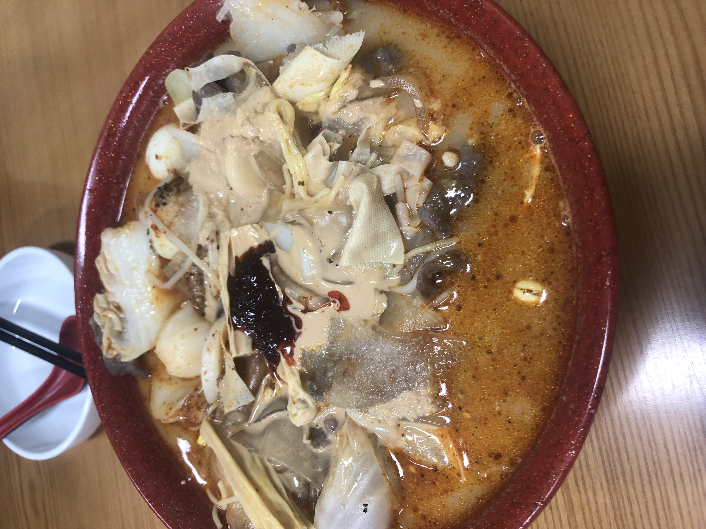

나에게 마라탕이란 동반자이다. 슬플때 기쁠때 쓸쓸할때 화날때 언제든지 생각나는 소울푸드 그 자체이다. 마라탕을 처음 접하게 된 것은 2018년 대학교 1학년때이다. 사실 고등학교 시절 학교앞에 마라탕을 파는 가게가 있었다. 그 시절 나에게 마라탕은 친구들이 먹고오면 옷에서 이상한 냄새가 나 자습실에 하루종일 냄새를 풍기고 다니던 최악의 음식 그 자체였다. 환상적인 맛이라고 말하는 친구들의 조언에도 귀를 닫은 채 그저 냄새나는 음식이라고 생각했다. 그런 나에게 대학교 친구는 마라탕을 입문시켜주었다. 처음 내가 마라탕을 먹은 가게는 시장 한 구석 가게인가 싶은 곳이었다. 가게에 들어가서 처음 느낀 감정은 당혹이었다. 한쪽에 온갖 야채와 재료들이 가득 있었고 코를 찌르는 냄새에 정신이 없었다. 마라 고수인 친구를 따라 바구니를 들고 많은 재료 앞에 섰다. 처음보는 면부터 내가 좋아하는 야채들까지 정말 다양한 재료들이 눈 앞에 펼쳐졌다. 그 중 몇가지를 넣고 카운터에 맵기와 고기추가를 선택한채 자리로 돌아갔다. 그때부터 심장이 두근거리기 시작했다. 비록 마라탕의 첫인상을 좋지않았지만 내심 기대가 되고 설렜다. 음식이 나오고 한입 먹었을때 그때의 기억을 잊지못한다. 그 후 나는 마라귀신이되어 이승을 떠돌며 흔히 말하는 마라 도장 깨기를 시작하였다. 그후 많은 사람들에게 마라에 대해 알리고 나만의 꿀팁을 알려주기 위해 이 페이지를 개설하였다.  *사진은 맛이 없어보이지만 정말 맛있었다.*
마라(중국어: 麻辣, 병음: málà, 한자음: 마랄)는 중국어로 "얼얼한 맛"을 뜻하는 "마(麻)"와 "매운 맛"을 뜻하는 "라(辣)"를 합친 말로, "얼얼하고 매운 맛"을 가리킨다. 얼얼한 맛은 화자오의 산쇼올이, 매운 맛은 고추의 캡사이신이 낸다. 쓰촨 요리의 대표적인 향미 가운데 하나이다. 쓰촨 및 윈난 지역에서는 마라 소스(중국어 간체자: 麻辣酱, 정체자: 麻辣醬, 병음: málàjiàng 마라장[*], 한자음: 마랄장)나 마라 가루(중국어: 麻辣粉, 병음: málàfĕn 마라펀[*], 한자음: 마랄분)가 시판되기도 한다. 즉, 마라탕(중국어 간체자: 麻辣烫, 정체자: 麻辣燙, 병음: málàtàng, 한자음: 마랄탕)은 쓰촨 러산에서 유래한 중국의 음식으로, 맵고 얼얼한 탕 요리이다. 마라(麻辣)를 이용해 만들며, 마라탕의 혀가 얼얼하게 마비되는 듯한 느낌은 마라에 화자오가 들어가기 때문이다.